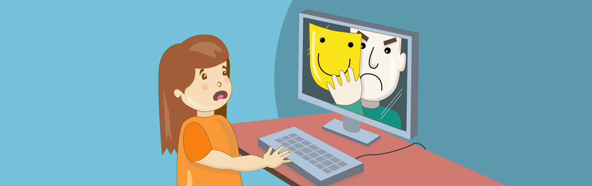

El GROOMING es un delito que consiste en el acoso sexual y virtual a niños y adolescentes por parte de un adulto.
El acosador simula ser un niño o niña a través de un perfil falso para establecer una conexión y control emocional con el fin de disminuir las inhibiciones de los chicos.
A través de distintas técnicas de manipulación, el adulto consigue que el niño se desnude o realice actos de naturaleza sexual.

¿Cómo detectarlo?
Hay que prestar mucha atención al comportamiento de los niños y estar alerta si se observan determinadas actitudes, por ejemplo:
- Si se produce un notable aumento o disminución en el uso de los dispositivos.
- Si el niño muestra respuestas emocionales (risa, enojo, disgusto) a lo que ocurre en la pantalla.
- Si oculta la pantalla cuando un adulto está cerca.
- Si evita situaciones sociales, incluso aquellas que disfrutaba anteriormente.
- Si se vuelve retraído o se deprime, o si pierde interés en las personas y actividades.
¿Cómo prevenirlo?
- No borrar ningún contenido del teléfono o la computadora que haya recibido, ya que las conversaciones, las imágenes y los videos que se hayan intercambiado con el acosador, deben ser guardadas como prueba.
- Sacar fotos o capturas de pantalla para almacenar esta información en algún otro dispositivo.
- No denunciar el perfil del acosador en las Redes Sociales ya que al bloquear al usuario se puede generar una pérdida de la información necesaria para realizar luego la investigación. Además, el abusador puede crear un nuevo perfil y continuar realizando estas acciones.
- No amenazar al acosador dado que esta actitud puede dificultar la tarea de los investigadores.
El Grooming es un delito, por lo que se debe realizar la denuncia para iniciar la investigación del caso. La denuncia puede hacerse presencialmente en una comisaría o en una fiscalía y también, de manera online,
en Ministerio Público Fiscal de la Ciudad Autónoma de Buenos Aires o llamando al 134 o al 0800-33 (FISCAL) 347225.
¿Quién lo puede sufrir?
Cualquier usuario de Internet puede sufrir acoso sexual, pero a más conocimiento sobre este tema y sobre cómo actuar mayor es la seguridad. Es importante concienciar a los menores sobre el riesgo que entraña compartir en Internet o enviar por móvil imágenes íntimas o comprometidas, ya que puede tener consecuencias no deseadas y dañinas y pueden llegar a difundirse entre los amigos, familiares, profesores, etc. y circular por Internet por mucho tiempo.
Tipos de acosadores
- Acosador directo: Participa en chats, foros y redes sociales para identificar a menores y establecer contacto. Cuando lo ha hecho, les realiza propuestas de “sexo virtual”, les pide imágenes o presiona para que conecten la cámara web.
- Acosador oportunista: Elige a sus víctimas por las fotos con contenido sexual que encuentra a través de Internet y las convierte en su objeto de acoso. Realiza un fuerte chantaje sobre el menor, con la amenaza de difundir las imágenes o vídeos en la red o incluso con sus amigos y familiares.
- Acosador específico: Su objetivo es obtener imágenes sexuales del menor y establecer contacto sexual con él. Se trata de un pedófilo que dedica tiempo a una primera fase de acercamiento, para ganarse progresivamente la confianza del menor.
Dado que los acosadores específicos son los más difíciles de identificar, a continuación se ofrece información sobre las fases que llevan a cabo para acosar a los menores (aunque hay que tener en cuenta que no todos los acosadores las siguen exactamente).
Fases del acoso
- Enganche: en esta primera fase el acosador hará preguntas sobre la edad y localización, e intentará conocer sus gustos para adaptarse a ellos y generar identificación (aportando información falsa sobre aficiones, edad, etc.). Su objetivo es ganarse la confianza del menor.
- Fidelización: en esta fase el acosador querrá asegurarse que el menor quiere seguir hablando con él. Conversará sobre temas de interés de la víctima, intentará que ésta le hable de su situación familiar, relaciones… para convertirse en su “confidente”.
- Seducción: el acosador utiliza toda la información para seducir y manipular. Aparecerá el sexo en las conversaciones, las fotos, la cámara web… Posiblemente enviará fotos de otros menores haciéndose pasar por ellos para provocar un sentimiento de culpa si el menor no hace lo mismo.
- Acoso: el acosador ya dispone de información (gustos, preocupaciones, situación familiar, fotografías…) con la que chantajear, amenazar y manipular al menor para establecer una relación sexual (física o virtual).
- El chantaje es común en todos los casos de acoso: cuando el acosador tenga imágenes comprometidas, amenazará y manipulará con su difusión para conseguir sus objetivos.
El Centro de Seguridad en Internet para los menores –integrado en el Safer Internet Program de la Comisión Europea- ha creado la línea de ayuda “Que no te la den” para la prevención del acoso sexual de menores.
Consejos para prevenir el grooming
La organización PROTEGELES proporciona a las víctimas abogados y psicólogos para acompañarlas, ayudarlas y asesorarlas, y ha elaborado el siguiente decálogo de consejos para prevenir el grooming:
- Rechaza los mensajes de tipo sexual o pornográfico. Exige respeto.
- No debes publicar fotos tuyas o de tus amigos/as en sitios públicos.
- Utiliza perfiles privados en las redes sociales.
- Cuando subas una foto en tu red social asegúrate de que no tiene un componente sexual. Piensa si estás dispuesto/a a que esa foto pueda llegar a verla todo el mundo y para siempre.
- No aceptes en tu red social a personas que no hayas visto físicamente y a las que no conozcas bien. Si tienes 200, 300 o 500 amigos estás aceptando a personas que realmente no son amigos ni familiares tuyos.
- Respeta tus propios derechos y los de tus amigos/as. Tienes derecho a la privacidad de tus datos personales y de tu imagen: no los publiques ni hagas públicos los de otros.
- Mantén tu equipo seguro: utiliza programas para proteger tu ordenador contra el software malintencionado.
- Utiliza contraseñas realmente privadas y complejas. No incluyas en tus nicks e identificativos datos como tu edad, etc.
- Si se ha producido una situación de acoso guarda todas las pruebas que puedas: conversaciones, mensajes, capturas de pantalla...
- Si se ha producido una situación de acoso NO cedas ante el chantaje. Ponlo en conocimiento de tus padres, pide ayuda al Centro de Seguridad en Internet para los menores.